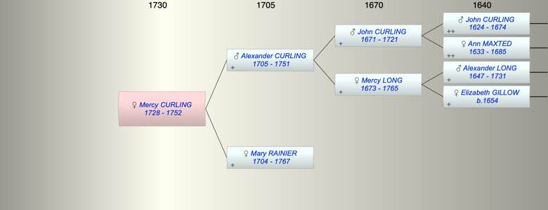

| [Index] |
| Mercy CURLING (1728 - 1752) |
|  |
| b. 1728 at St Laurence |
| d. 1752 aged 24 |
| Parents: |
| Alexander CURLING (1705 - 1751) |
| Mary RAINIER (1704 - 1767) |
| Siblings (6): |
| George CURLING (1726 - 1783) |
| Daniel CURLING (1729 - 1782) |
| Alexander CURLING (1731 - 1732) |
| Mary CURLING (1733 - 1750) |
| Ann CURLING (1736 - ) |
| Alexander CURLING (1740 - ) |
| Events in Mercy CURLING (1728 - 1752)'s life | |||||
| Date | Age | Event | Place | Notes | Src |
| 1728 | Mercy CURLING was born | St Laurence | Note 1 | ||
| abt 1751 | 23 | Death of father Alexander CURLING (aged 46) | |||
| 1752 | 24 | Mercy CURLING died | Note 2 | ||
| Note 1: bap St Laurence 4 Sep 1728 ex FMP PR |
| Note 2: buried 17 Jul 1752 St Laurence dau of Alexander and Mary ex FMP PR |
| Created on a Mac™ using iFamily for Mac™ on 8 Oct 2023 |